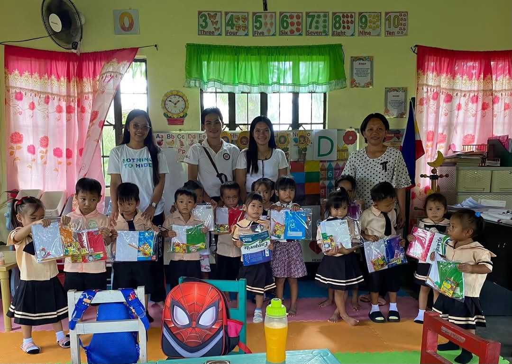
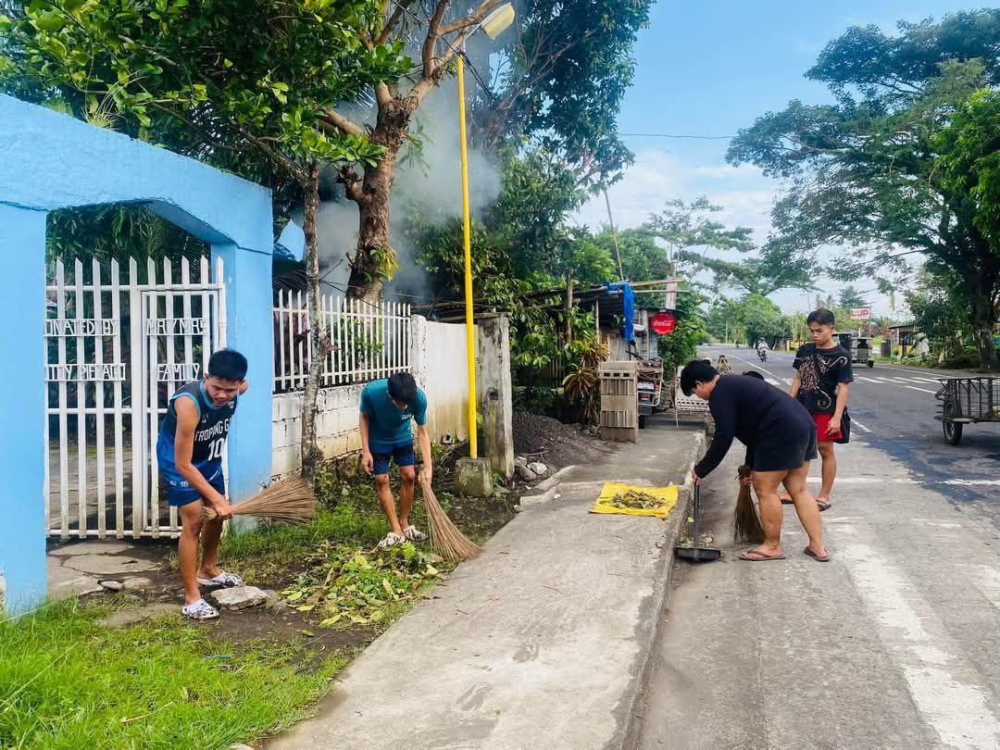
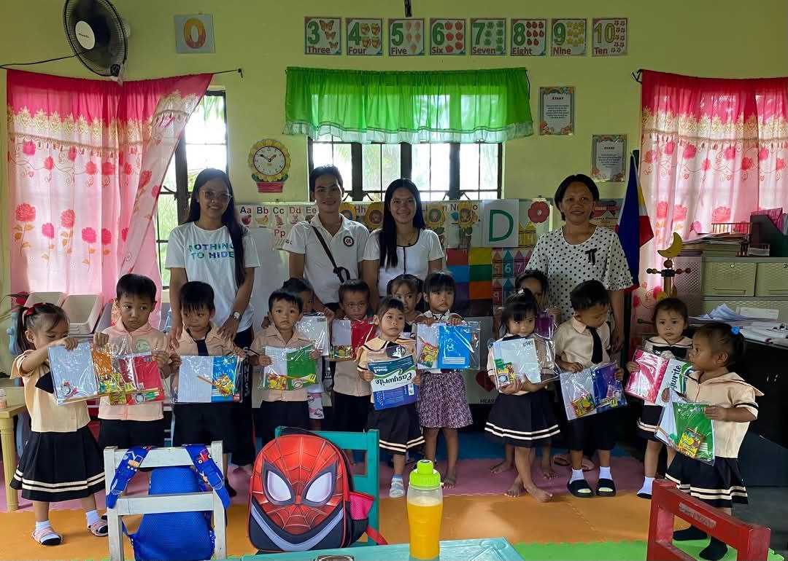
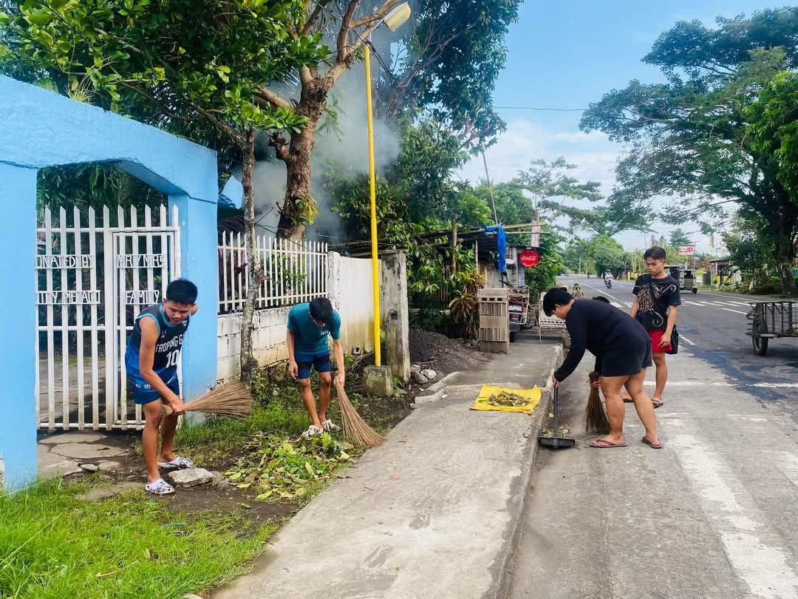
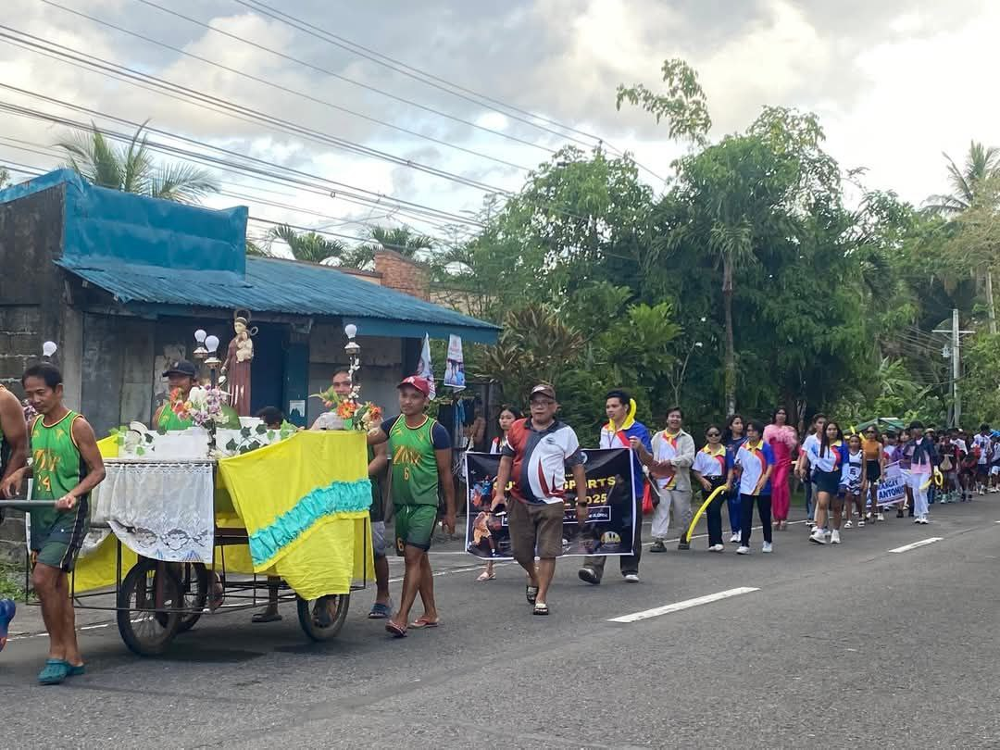
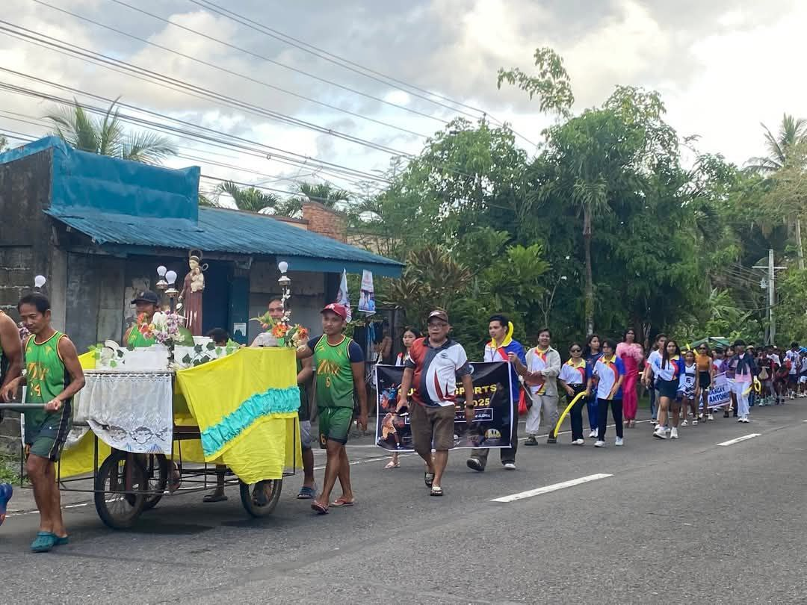

Portfolio
Explore the various projects, events, and initiatives that make Barangay San Antonio a wonderful place to live. Our community works together to create a clean, safe, and progressive environment for all residents.

 



 
